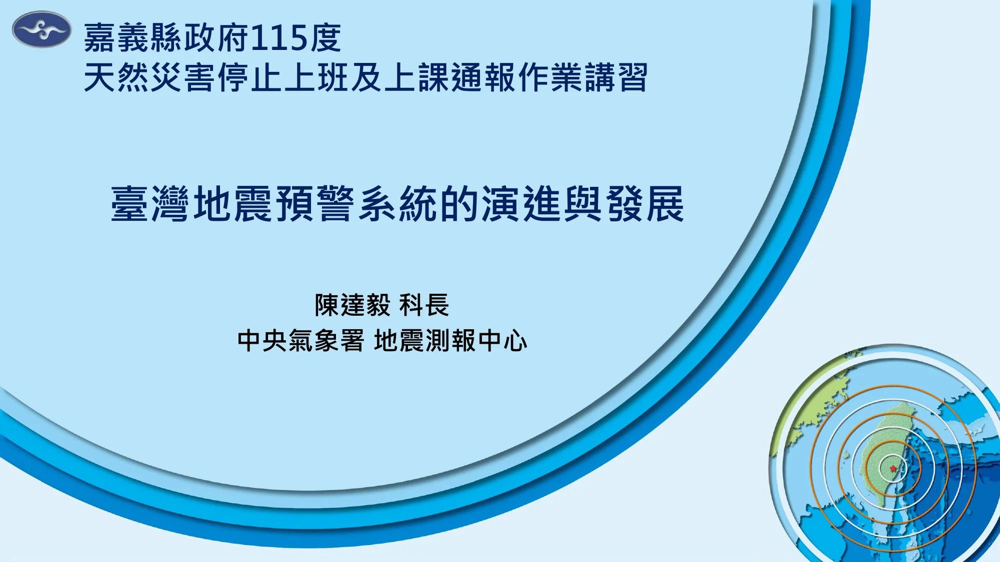

陳達毅 科長｜中央氣象署 地震測報中心 · 2026 年 6 月 12 日

給沒時間看完 50 頁的你 — 本場講習最重要的觀念與數字。
P 波（縱波）速度快、震幅小；S 波（橫波）慢但具破壞力。利用 P 波前 3 秒資訊推估規模並快速發送警報，可在災害性震波抵達前爭取應變時間。
歷經測站布建、演算法革新與加密觀測，警報發布時效自 1994 年的震後 102 秒壓縮至今日 7 秒；盲區半徑由 35 公里縮至 25 公里，面積減少逾 51%。
預估規模達 5.0 且預估震度達 4 級發布國家級警報（細胞廣播）；電視臺插播為規模 5.0＋震度 3 級；網路推播為規模 4.5＋震度 3 級。
DROP! COVER! HOLD ON! 就近避難，躲在堅固桌下或建築物中央牆邊，保護頭部、勿慌張往室外跑、勿靠近窗戶以防玻璃震破。
板塊每年以 7~8 公分聚合：每天約 100 個地震、每年約 100 個顯著有感地震、每 30~40 年 1 個大規模災害性地震。1900 年以來已有 7 次罹難百人以上災害地震。
深層地震（如 114/12/27 M7.0 深度 67.7km）預警時效受限；短時間連續地震可能造成誤報（111/9/18）或漏報（112/9/15 相差僅 4 秒的兩起地震）。警報不可能 100% 完美，平時整備更重要。
臺灣劃分 6 個海嘯警戒分區，預估波高分為 4 級（0.3 公尺以下至 6 公尺）。海嘯警報、警訊不管哪一種：往高處、往內陸、找堅固、抓牢固，等解除再返回沿海。
以機器學習模型用 3 秒 P 波預估震度、爭取約 15 秒預警時間；逐秒觀測震度輔助研判；預警發布由縣市級走向鄉鎮級小區域精準警報，並持續公私協力多管道傳遞。
地震來時立刻放低重心，避免被搖晃甩倒。
躲進堅固桌下，以墊子或手保護頭頸。
抓緊桌腳穩住身體，直到搖晃完全停止。